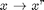
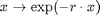
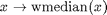

GEODESICFILT - Multispectral edge-preserving smoothing filter.
Contents
Description
Matlab (slow) implementation of the Sigma-filter for edge-preserving smoothing of multispectral images using local geodesic similarity measures, as described in [GS09a,GS09b] in its isotropic version and in [GSD10] in its generalized anisotropic version.
Syntax
F = GEODESICFILT(I);
F = GEODESICFILT(I, method, wei, winsize, ...
'Property', propertyvalue, ... );Inputs
I : input image, possibly multispectral.
method : method used for selecting the geodesic iso- or aniso-tropic filtering; it derives a cost function from the input image which defines how distances are propagated from the center of the local anylizing window (see IM2POTENTIAL_BASE); the potential function is based on the gradient structure tensor (GST) of the image, and its expression depends on the chosen method:
- 'iso' for a scalar potential set to the inverse of the GST norm,
- 'ani' (or 'gstnorm') for a tensorial tensor set to the orthogonal of the GST and scaled by the GST norm (scaled eigenvalues, orthogonal eigenvector),
- 'gstcoh' for a tensorial tensor set to the orthogonal of the GST and scaled by the coherence (see GSTFEATURE); note that 'gstcoh' also performs anisotropic filtering;
default: method='iso'.
wei : (optional) scalar or string defining the (monotically decreasing) function used for defining the geodesic kernel by weighting the geodesic distances inside local windows (wee Eq.(7) of [GS09b]); the weighting function can be either:
- the inverse scaled function:  (the potential is therefore the inverse geodesic distance to the central pixel) when wei='scale' (then r=2) or wei is a scalar <0 (then r=abs(wei)),
- the gaussian function  when wei='gauss' (then r=1) or when is a scalar >0 (then r=wei); in the latter case, wei is assimilated to alpha/sigma^2 (note that r stands for the
 in Eq.(7) of [CG09b] as sigma was chosen to be 1 for consistency),
in Eq.(7) of [CG09b] as sigma was chosen to be 1 for consistency), - the weighted median function  when wei='median' or wei=0;
default: wei=1.
winsize : (optional) size of the local analyzing window (should be odd, otherwise adjusted); default: winsize=11, i.e a window with radius 5 is chosen.
Property [propertyname propertyvalues]
'iter' : (optional) number of iterations; default: iter=1.
'a' : exponent(s) (1,n) with n={1,2} used for amplyfying the strenght of the cost function (see IM2POTENTIAL_BASE); default: a=[1 1].
'rho', 'sig' : pre- and post- smoothing standard deviations used for GST estimation (see GRD2GST); default: rho=3, sig=1.
'der', 'int', 'samp', 'eign' : additional options for computing the GST (see functions GRD2GST and GSTSMOOTH); default: der='fast', int='fast', samp=1 and eign='l1'.
Output
F : filtered image, with same dimension as the input image.
References
[GS09a] J. Grazzini and P. Soille: "Image filtering based on locally estimated geodesic functions", In Proc. VISIGRAPP, CCIS, vol. 24, pp. 123-124, 2009. http://www.springerlink.com/content/v264v11754004500/
[GS09b] J. Grazzini and P. Soille: "Edge-preserving smoothing using a similarity measure in adaptive geodesic neighbourhoods", Pattern Recognition, 42(10):2306-2316, 2009. http://www.sciencedirect.com/science/article/pii/S003132030800469X
[GSD10] J. Grazzini, S. Dillard and P. Soille: "Multichannel image regularisation using anisotropic geodesic filtering", Proc. ICPR, pp. 2664-2667, 2010. http://ieeexplore.ieee.org/xpls/abs_all.jsp?arnumber=5596008&tag=1
Credit
J.Grazzini (IES/JRC)
See also
Related: ADAPTIVEFILT, TENSANIFILT, TENSCALEDIRFILT, MDLFILT, GSTSMOOTH, GRD2GST, FMMISOPROPAGATION, FMMANISOPROPAGATION, POTENTIAL2FRONT, IM2POTENTIAL, FMM_BASE, PDEM. Called: GEODESICFILT_BASE.
% note: you can 'play' with the parameter method as other methods are % accepted (see function IM2POTENTIAL_BASE) but not mentioned here
Function implementation
function F = geodesicfilt(I,varargin)
parsing parameters
error(nargchk(1, 25, nargin, 'struct')); error(nargoutchk(1, 2, nargout, 'struct')); % mandatory parameter if ~isnumeric(I) error('geodesicfilt:inputerror','a matrix is required in input'); end % optional parameters p = createParser('GEODESICFILT'); % create an instance of the inputParser class. p.addOptional('method', 'iso', @(x)ischar(x) && ... any(strcmpi(x,{'iso','isotropic','ani','anisotropic', ... 'gstninv','gst','gstorth','gstn','gstn1','gstn2','gstn3','gstcoh'}))); p.addOptional('wei', 2, @(x) (isscalar(x) && x>=-5) || ... (ischar(x) && any(strcmpi(x,{'scale','gauss','median'})))); p.addOptional('winsize', 11, @(x)isscalar(x) && isfloat(x) && x>=3); % additional optional parameters p.addParamValue('iter', 1, @(x)isscalar(x) && round(x)==x && x>=1); p.addParamValue('rho', 3, @(x)isscalar(x) && isfloat(x) && x>=0); p.addParamValue('sig', 1, @(x)isscalar(x) && isfloat(x) && x>=0); p.addParamValue('der', 'fast', @(x)islogical(x) || (ischar(x) && ... any(strcmpi(x,{'matlab','vista','fast','conv','fleck', ... 'tap5','tap7','sob','opt','ana'})))); p.addParamValue('int', 'fast', @(x)islogical(x) || (ischar(x) && ... any(strcmpi(x,{'matlab','conv','fast','ani'})))); p.addParamValue('samp', 1, @(x)isscalar(x) && round(x)==x && x>=1 && x<=5); p.addParamValue('eign','l1',@(x)ischar(x) && ... any(strcmpi(x,{'abs','zen','l1','sap','sum','ndi','dif','koe'}))); p.addParamValue('a', [1 1], @(x)isscalar(x) || ... (isvector(x) && length(x)==2)); % parse and validate all input arguments p.parse(varargin{:}); p = getvarParser(p);
checking/setting parameters
if strcmp(p.method,'anisotropic'), p.method = 'ani'; elseif strcmp(p.method,'isotropic'), p.method = 'iso'; end if ischar(p.wei) if strcmpi(p.wei,'gauss'), p.wei = 1; % weighting gaussian with alpha=1 elseif strcmpi(p.wei,'scale'), p.wei = -1; % 1/D weighting function else p.wei = 0; % median end end % set some default if any(strcmpi(p.method,{'gstnorm1','gstnorm2','gstnorm3'})) if isempty(p.a), p.a = [1 2]; elseif length(p.a)==1, p.a = [p.a p.a+eps]; end end if isempty(p.a), p.a = 1; end
main calculation
F = geodesicfilt_base(I, p.method, p.iter, p.wei, p.winsize, p.a, ...
p.rho, p.sig, p.der, p.int, p.samp, p.eign);
display
if p.disp figure, imagesc(rescale(F,0,1)), axis image off, title(['geo-filtered image - method ' p.method]); if size(F,3)==1; colormap gray; end end
end % end of geodesicfilt